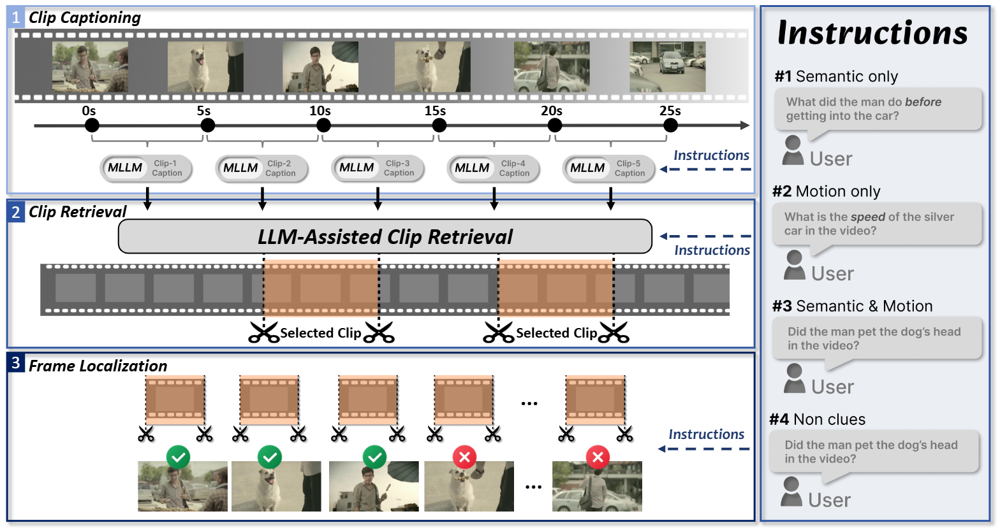
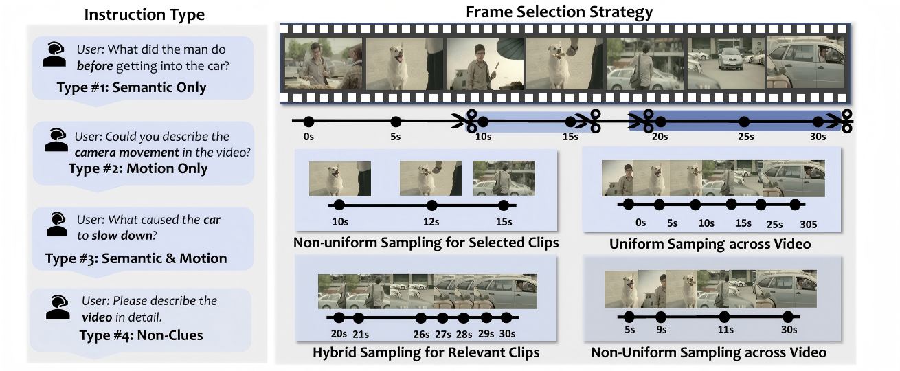
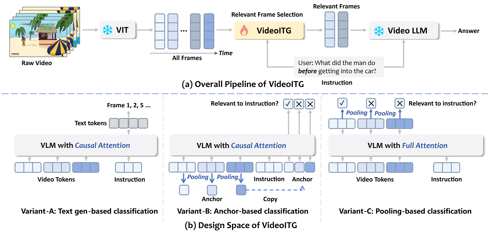
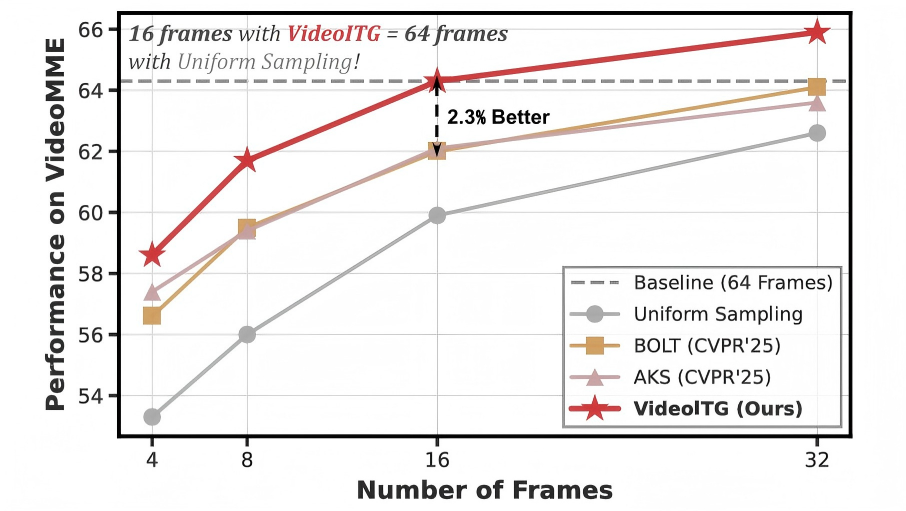
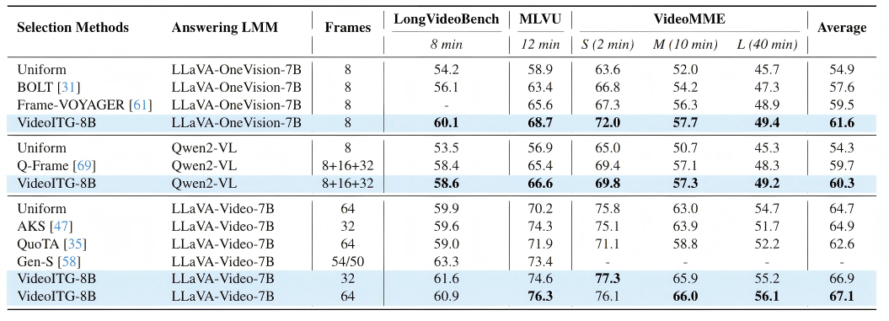
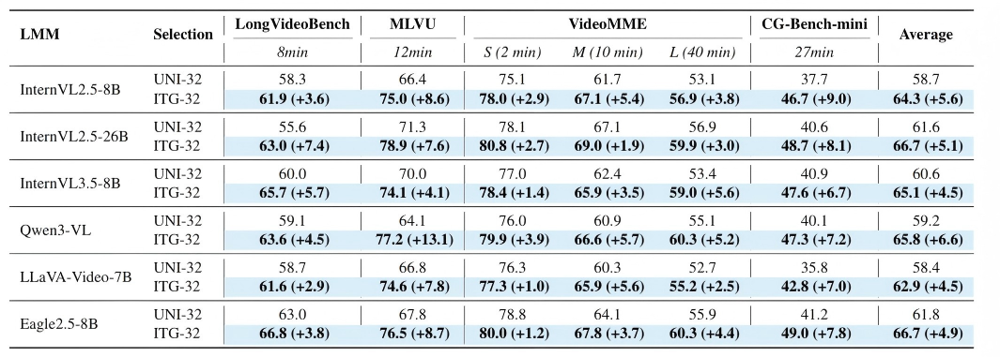
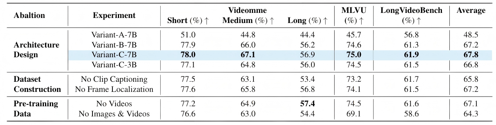
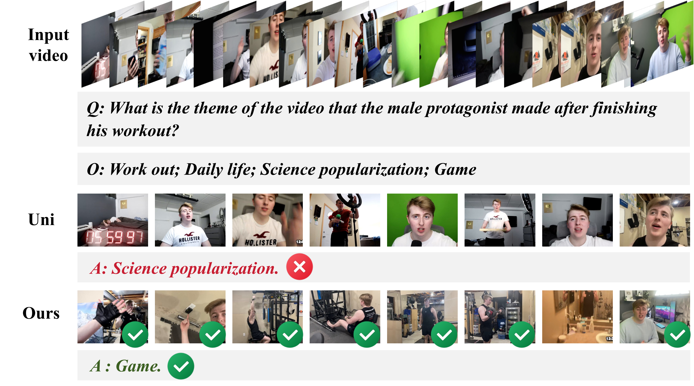
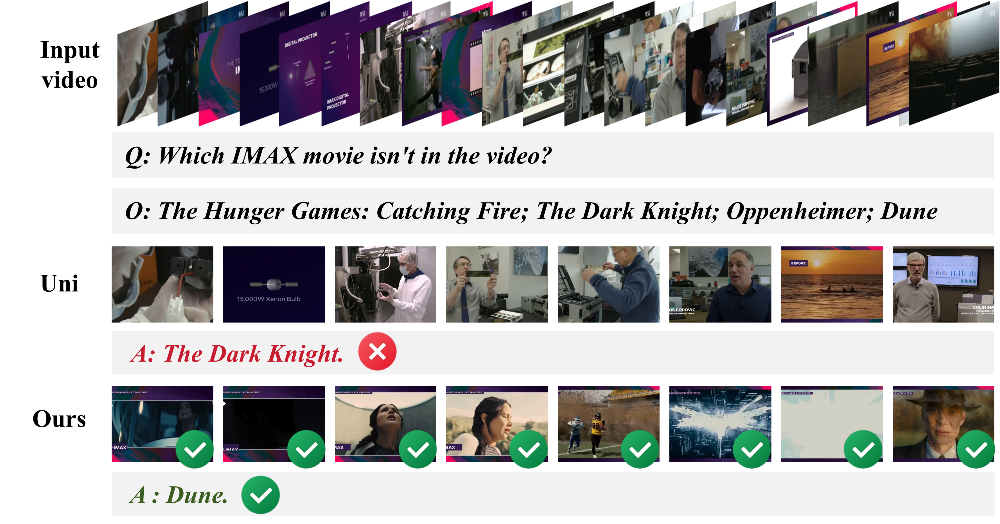

Figure 1: Overview of the VidThinker annotation pipeline for VideoITG. It consists of three human-inspired stages: (1) clip-level captioning under instructions; (2) instruction-guided relevant clip retrieval; and (3) fine-grained frame-level localization.
While Video Large Language Models (Video-LLMs) have shown significant potential in multimodal understanding and reasoning tasks, how to efficiently select the most informative frames from videos remains a critical challenge. Existing methods attempt to optimize frame sampling by reducing inter-frame redundancy or employing unsupervised event localization. However, these approaches often fall short in handling complex instruction-following tasks and scenarios that demand precise temporal modeling, resulting in limited performance in both semantic alignment and temporal reasoning. To address the above challenges, we introduce Instructed Temporal Grounding for Videos (VideoITG), a framework aiming to adaptively customize frame sampling strategies based on user instructions. Specifically, we design the VidThinker pipeline, which automates annotation by generating instruction-conditioned captions, retrieving relevant video segments, and selecting key frames to enable efficient supervision. Using VidThinker, we build the VideoITG-40K dataset with 40K videos and 500K temporal grounding annotations. Our plug-and-play VideoITG model leverages Video-LLMs' visual-language alignment and reasoning for discriminative frame selection. VideoITG consistently boosts the performance on multiple multimodal video understanding benchmarks, demonstrating its effectiveness and potential.

Figure 2: Illustration of four instruction types and their corresponding frame selection strategies in VidThinker. For semantic-focused instructions, the system selects diverse frames capturing key visual clues. For motion-focused instructions, frames are uniformly sampled to capture dynamic changes. When both semantic and motion cues are required, a hybrid sampling strategy is applied. For vague or open-ended instructions, the system samples a minimal yet diverse set of frames across the video for holistic coverage.

Figure 3: VideoITG model design: (A) Text generation aligns video and language tokens for sequential predictions. (B) Classification with causal attention utilizes anchor tokens for temporal cue management. (C) Classification with full attention facilitates interaction across visual and text tokens without anchors.

Figure 4: Comparison of different frame selection methods on VideoMME with LLaVA-Video-7B. VideoITG consistently enhances baseline methods and achieves state-of-the-art performance.

Table 2: Results with different selection methods.

Table 3: Performance comparison of VideoITG integrated with different Video-LLMs, varying in both the size of the answering LLM and the number of sampled frames.

Table 4: Empirical studies on the VideoITG-40K dataset and VideoITG model design.
Our VideoITG model effectively searches for temporal cues in long videos, enabling VideoLLM to accurately answer questions.


@misc{wang2025videoitgmultimodalvideounderstanding,
title={VideoITG: Multimodal Video Understanding with Instructed Temporal Grounding},
author={Shihao Wang and Guo Chen and De-an Huang and Zhiqi Li and Minghan Li and Guilin Liu and Jose M. Alvarez and Lei Zhang and Zhiding Yu},
year={2025},
eprint={2507.13353},
archivePrefix={arXiv},
primaryClass={cs.CV},
url={https://arxiv.org/abs/2507.13353},
}